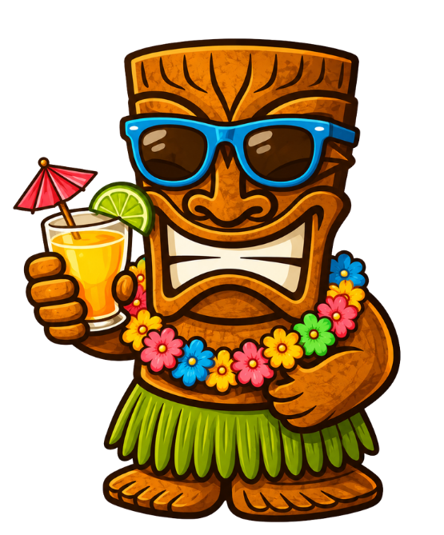
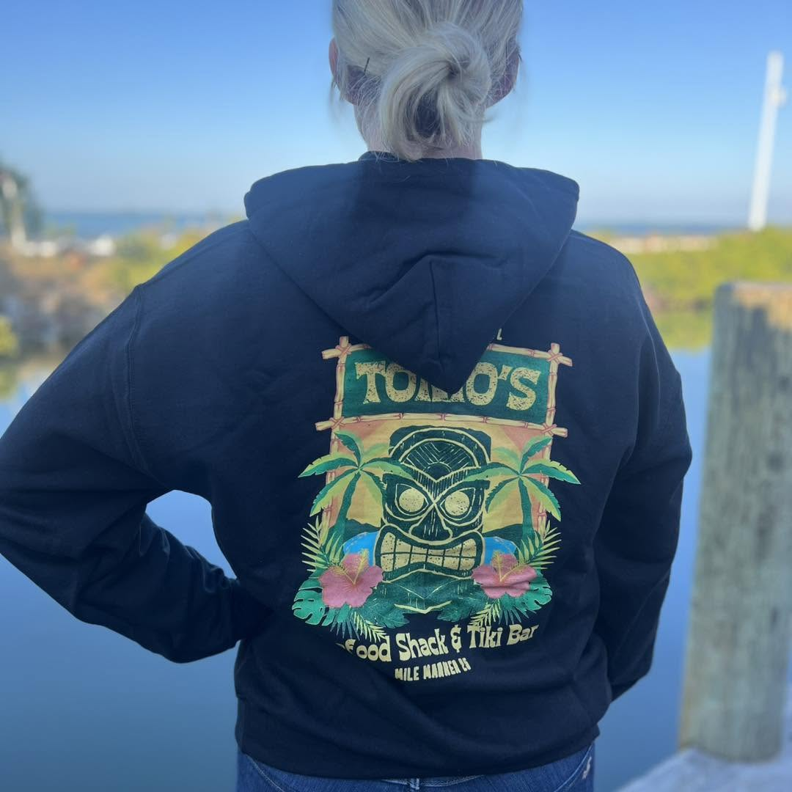

Shop
GEAR FROM
GEAR FROM
THE DOCK
Shirts, hats, koozies and other dockside essentials. Stop by and pick what you like — no online store, no shipping wait.
Available at the Shack
EVERYDAY GEAR,
EVERYDAY GEAR,
MADE FOR THE WATER
Everything here is built for sun, salt and a good time on the water. Come by Mile Marker 25 and grab yours before we run out.
No online orders. All merchandise is available in person at the shack only.

Sizes and stock change often. Call ahead at (305) 745-3322 if you're looking for something specific. All sales at the shack — cash or card.

Wear the Shack
TAKE A PIECE
TAKE A PIECE
OF MM25 HOME
Whether you're a local or passing through the Keys, Tonio's gear is the real souvenir. Worn-in tees, patch hats and koozies built for the dock life.